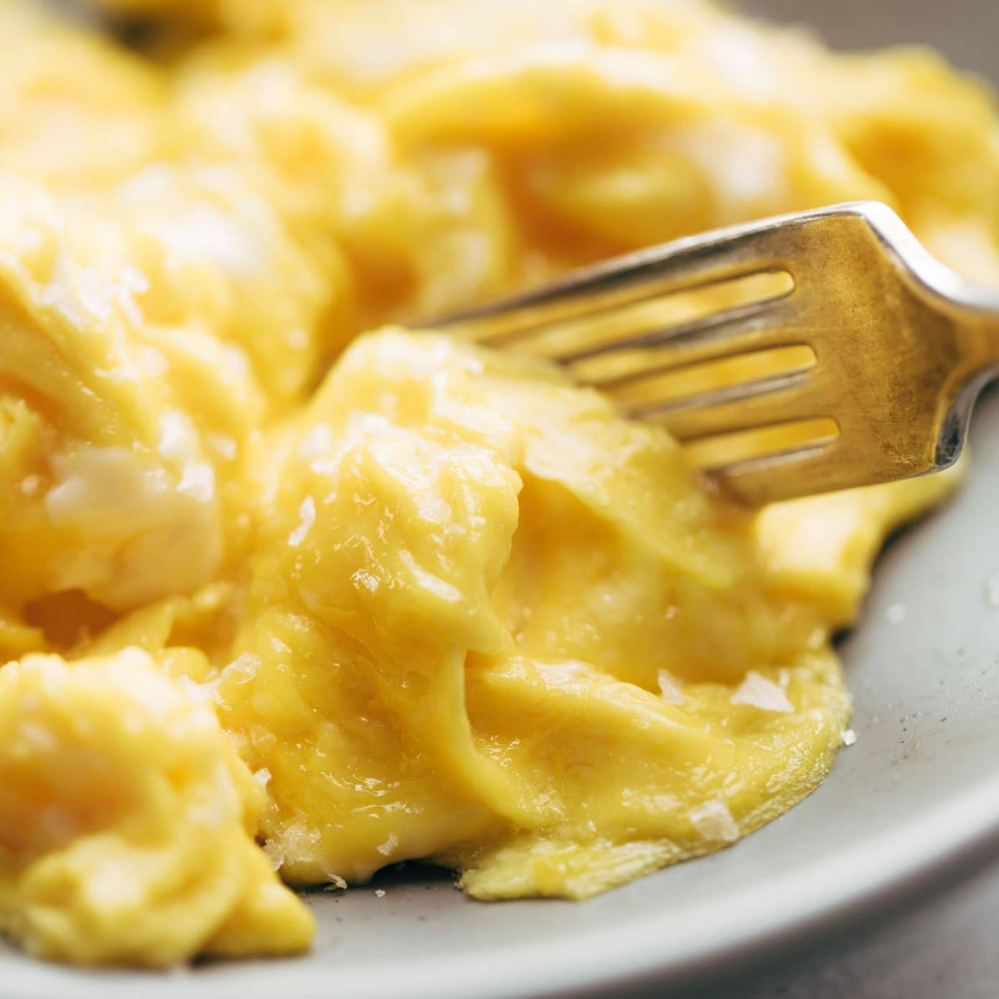

Scrabled Eggs

The Scrambled Eggs
Scrambled eggs is a recipe from at least the 14th century where eggs are stirred on heat in a way that they form curds.
Ingredients:
- 2 eggs
- Salt
- Pepper
- 1 tbs butter
Steps:
- Put cracked eggs, salt and pepper in a bowl then whisk them together.
- Melt the butter in an already heated non-stick pan.
- Pour in the egg mixture and stir frequently.
- When the eggs are softly set, turn the heat off and leave it for a bit.
- After this we can directly serve it on a plate.